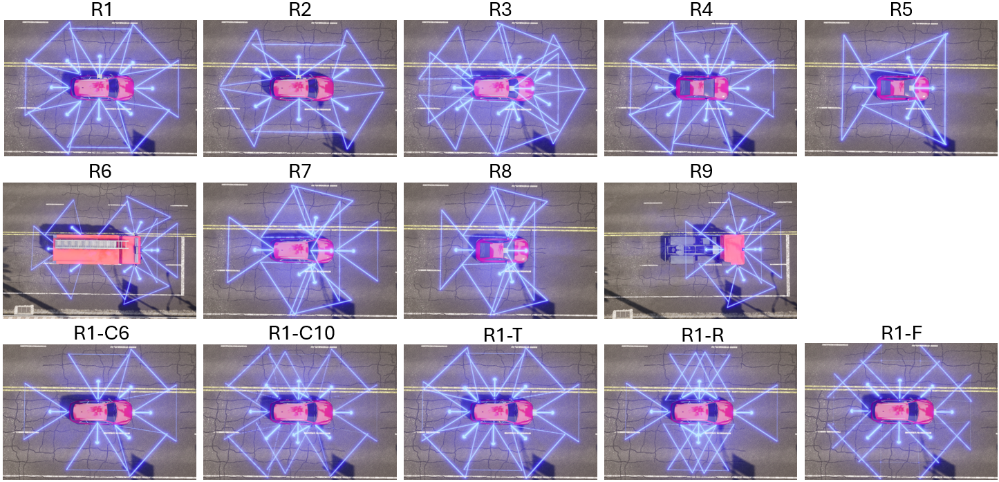
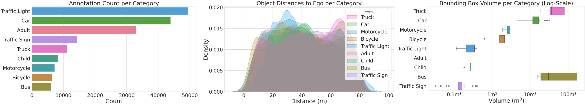

Dataset
Dataset
 Paper
Paper
 Code
Code
Abstract
Camera-based perception systems for autonomous driving are typically developed and evaluated using fixed sensor rigs, while real-world vehicle fleets exhibit substantial variation in camera placement, orientation, field of view, and camera count. This mismatch introduces a cross-rig domain gap in which only the geometric observation process changes.
To study this effect under controlled conditions, we introduce Plentiful CARLA Camera Rigs, a benchmark that renders identical driving scenes under 14 systematically designed camera rigs. Using this benchmark, we analyze cross-rig transfer behavior of representative multi-view perception architectures and observe substantial performance shifts induced by geometric rig variation.
We further introduce Rig Variance and Rig Contrastive Distance, two calibration-based descriptors. Our experiments show that geometric rig differences strongly correlate with relative cross-rig performance shifts, and that Rig Contrastive Distance is a reliable proxy for transfer difficulty.
Benchmark: Plentiful CARLA Camera Rigs
Plentiful CARLA Camera Rigs (PCCR) is a controlled benchmark where identical driving scenes are rendered under 14 systematically designed camera rigs. By fixing scene content, object layout, and environmental conditions while varying only rig geometry, the benchmark isolates rig-induced cross-domain effects.

The benchmark includes nine unique rigs and five factor-modified control rigs, and is generated in CARLA 0.9.16 (+ map expansion) with deterministic trajectory replay to keep scene dynamics consistent across rigs.
PCCR contains 115 scenes across all splits (80 train/val and 30 test kept during pruning). Each scene is 30 seconds long at 2 Hz, yielding 60 samples per scene. Across 105 cameras in 14 rigs, this corresponds to 724,500 images in total.

Annotation statistics are also substantial: R1-c10 contains 179,926 annotated objects across 7,299 unique instances, while R1-c6 has 159,907 annotations due to viewpoint-dependent visibility effects. This keeps the benchmark realistic while still enforcing controlled cross-rig variation.
Rig Metrics: RigV and RigCD
To structure cross-rig analysis, we use two calibration-metadata-based descriptors. Rig Variance (RigV) summarizes internal geometric diversity of a single rig, while Rig Contrastive Distance (RigCD) measures geometric discrepancy between two rigs.
RigV (single rig).
\[ \mathrm{RigV}(R) = V_{\text{internal}}(R) + \lambda\,\bigl(1 - \mathrm{Overlap}(R)\bigr) \]
Here, \(V_{\text{internal}}\) captures spread in camera placement, orientation, and field of view, while \(\mathrm{Overlap}\) captures inter-camera shared coverage.
RigCD (rig pair).
\[ \mathrm{RigCD}(R_a, R_b) = d_{\text{calib}}(R_a, R_b) + \alpha\,d_{\text{coverage}}(R_a, R_b) \]
Here, \(d_{\text{calib}}\) captures differences in intrinsics and extrinsics, and \(d_{\text{coverage}}\) captures directional and spatial coverage mismatch.
Citation
Please use the following BibTeX entry to cite our work:
@inproceedings{bader2026crossrig,
title = {Understanding Cross-Rig Generalization in Automotive Perception: a Multi-Rig Benchmark and Rig Variation Metrics},
author = {Bader, Tim Alexander and Eberhardt, Tim Dieter and Dillitzer, Maximilian and Stork, Wilhelm},
booktitle = {European Conference on Computer Vision (ECCV)},
year = {2026},
note = {Project page: https://badertim.github.io/plentiful-carla-camera-rigs/}
}